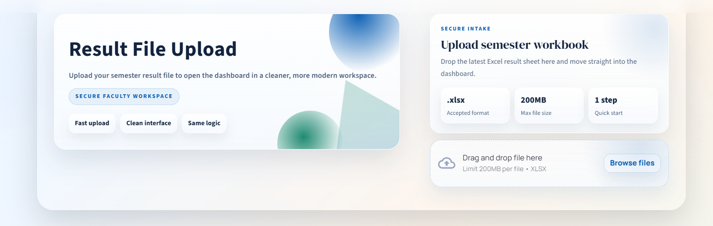

Auto-detect result schemas
Handles multi-row headers, term labels, and varied subject blocks without manual setup.
AIRAS helps faculty upload Excel workbooks, auto-detects the schema, and produces term-wise insights, toppers, grade distributions, and professional reports in minutes.
From uploads to reporting, the entire flow is streamlined for departments that need quick accuracy without losing the granularity of subject-wise diagnostics.
AIRAS keeps your analysis accurate, fast, and presentation-ready.
Handles multi-row headers, term labels, and varied subject blocks without manual setup.
Switch between terms, review SGPA trends, and highlight at-risk cohorts.
Search by name or PRN, filter passed/failed, and review subject-level outcomes.
Export styled sheets with summary tables, toppers, subject analysis, and interpretation.
Track uploads, keep institutional metadata, and resume analysis later.
Runs locally on Windows with no browser extensions or external databases.
Clean layouts designed for faculty workflows and quick reporting.

Everything is bundled. No Python setup required for end users.
Grab the AIRAS Windows installer from the download section below.
Run the setup wizard. It creates Start Menu and optional desktop shortcuts.
Open AIRAS from Start Menu and begin analyzing Excel results.
The installer includes all dependencies. Data is stored locally under your user profile.
Download AIRAS-Setup.exe